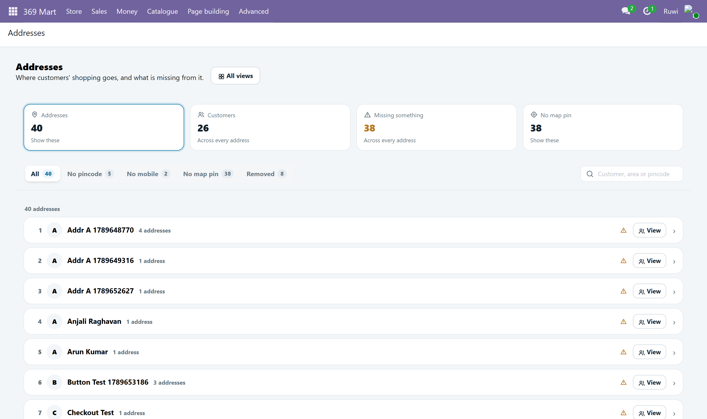
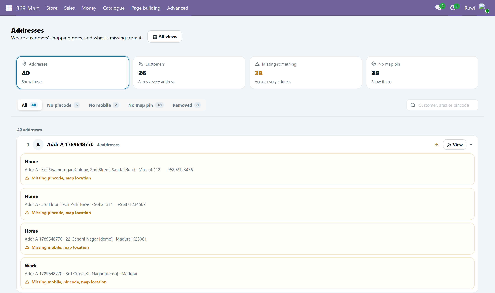
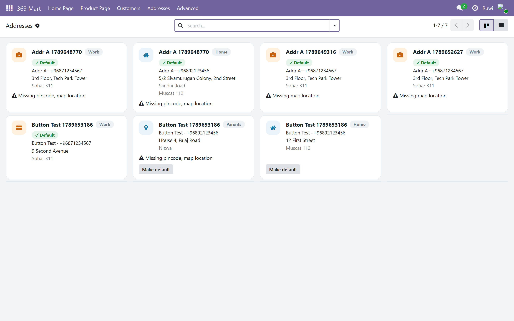
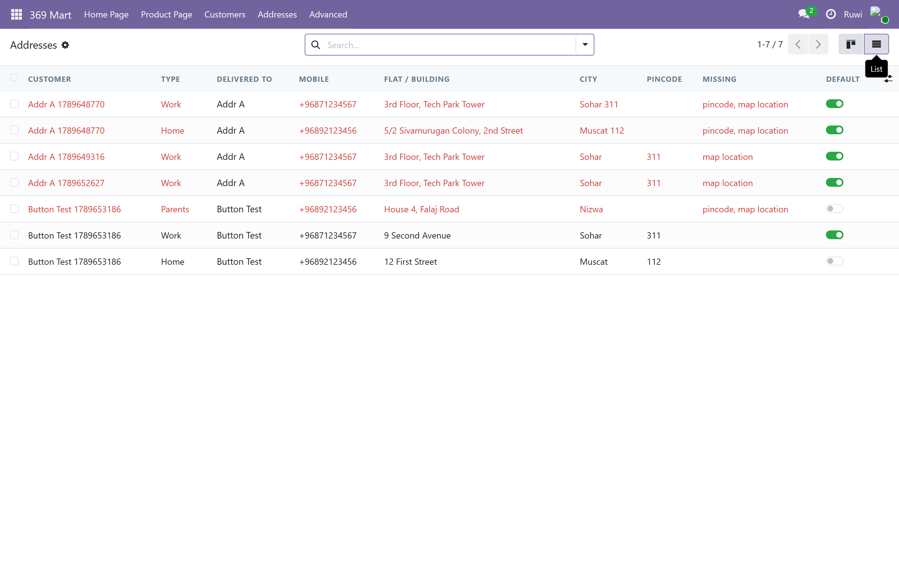
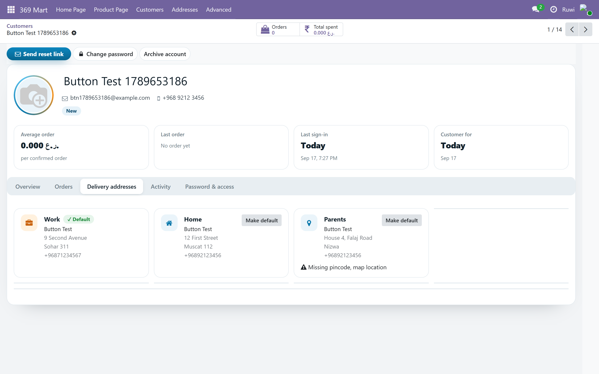
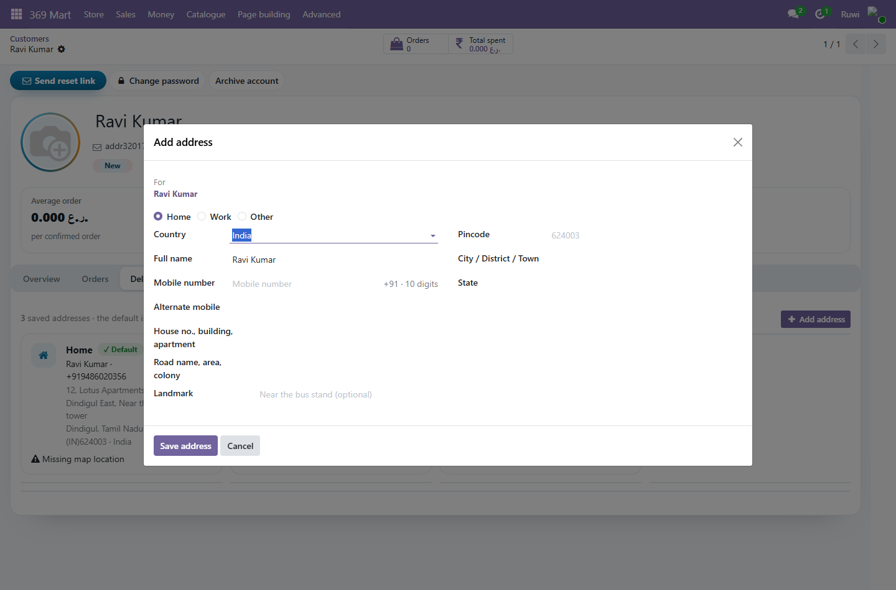
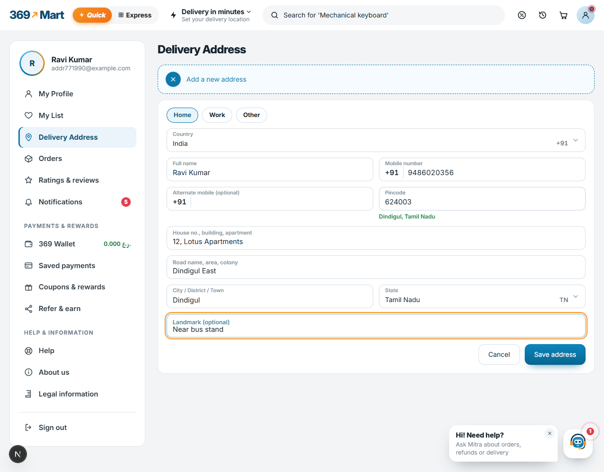
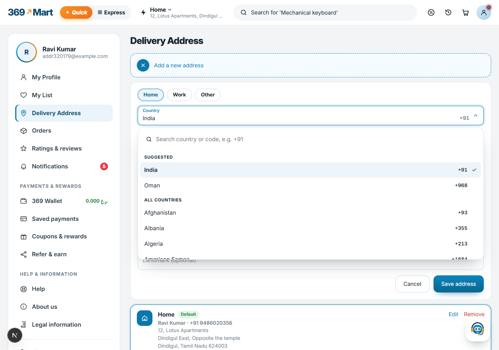
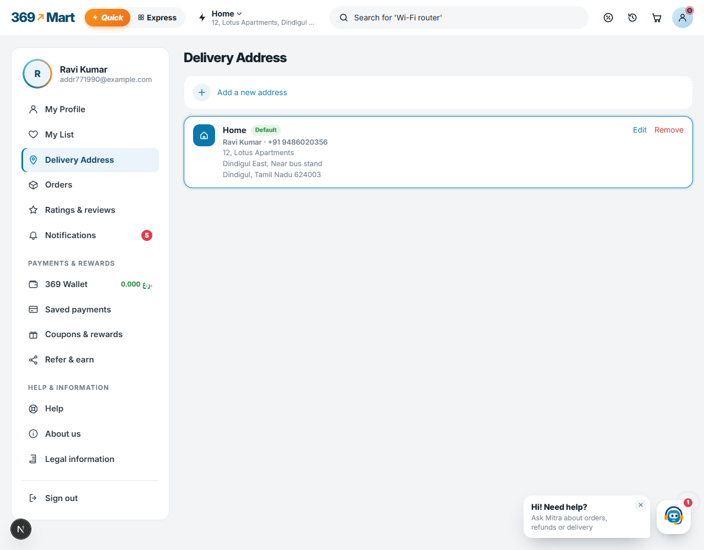
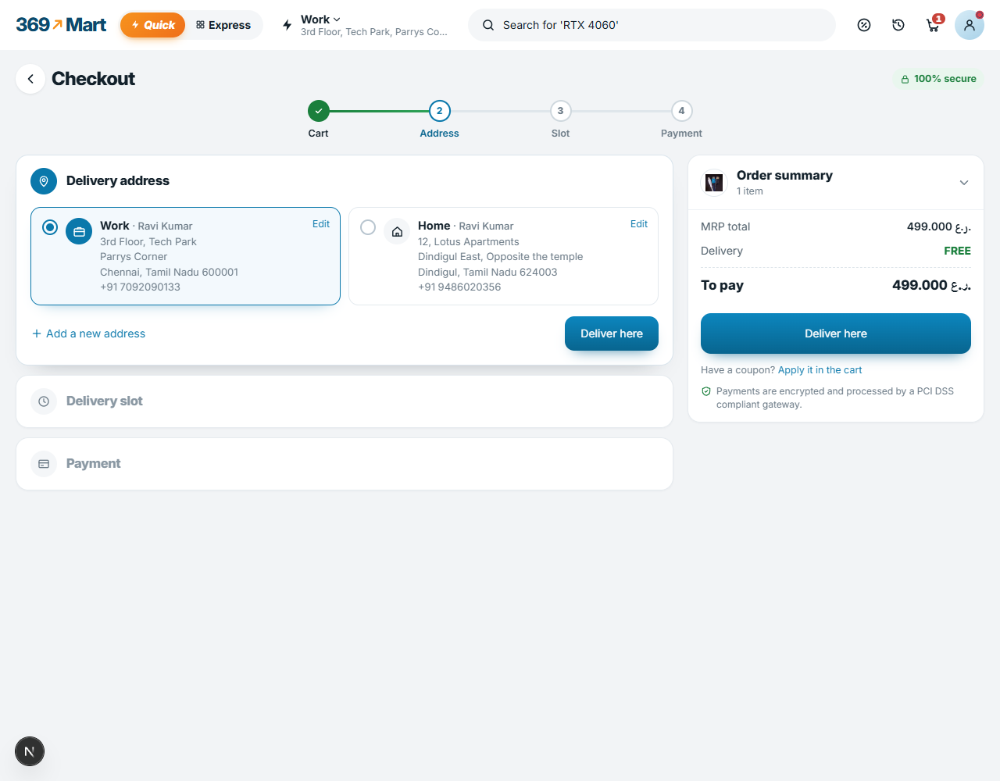

369 Mart Delivery Addresses lets every customer keep several delivery addresses — Home, Work or any name they like — and pick one as the default, the address orders ship to. In the shop app, Use my current location fills in the area, city, state and pincode from the phone's location, and the customer adds the rest.
Staff see every address in one place and spot the gaps — no mobile, no pincode, no street, no map location — before a rider is sent out. Staff can add an address or fix one for a customer, but never delete one, and an address an order already went to is never rewritten: the order keeps what it was placed with.
| Word | What it means |
|---|---|
| Address type | What the customer calls the address: Home, Work, Other, or their own word such as "Parents". |
| Default | The address the shop app selects for the customer, shown as "Default" or "Ships here". Only one per customer. |
| Missing | What an address still needs before a rider can be sent: mobile, pincode, street or map location. |
| Map location / map pin | The point on the map saved when the customer used their phone's location. |
| Removed | An address the customer deleted. Kept in the background because past orders point to it. |
| Pincode | The postal code. Six digits in India; 3 to 10 digits elsewhere. |
Part 1 – Setting Up shows where the screens live and the rules every address must meet. Part 2 – Everyday Use is the Addresses desk, the customer's Delivery addresses tab, adding and fixing addresses, and what the customer sees. Part 3 – Keeping It Secure & In Order covers who can change what and how past orders are protected.
Nothing to switch on. Read this part once to know the screens and the rules.
Open 369 Mart from the main menu:
Both Addresses screens are shown to the Salesperson role — the people who answer "where is my order". Adding and editing need the Website designer or Administrator (Settings) role.
The same rules apply whoever saves the address — the customer in the shop app or staff in the backend:
Where support staff look when a delivery fails or a rider cannot find a door.
Open Sales → Addresses. It is for looking, not editing. Four tiles sit at the top:
| Tile | What it shows |
|---|---|
| Addresses | Every address. Click to show them all. |
| Customers | How many customers have at least one address. |
| Missing something | How many addresses lack a mobile, pincode, street or map location. |
| No map pin | Addresses saved without a map location. Click to show them. |
Below, the tabs All, No pincode, No mobile, No map pin and Removed narrow the list, and the search box finds a customer, area or pincode. Each customer is one line with their address count and a warning sign if anything is missing. Click the line to open their addresses; View full profile opens the customer. All views at the top opens the board and list.


Advanced → Addresses (all views) shows each address as a card, laid out like a parcel label: customer, type chip, a green ✓ Default badge, name and mobile, the address lines, and a "Missing …" warning. A card that is not the default has Make default. The list shows the same with a Missing column and a Default switch.


Open Sales → Customers, open the customer, and go to Delivery addresses. The line at the top says how many are saved — "the default is where orders ship". Each card has Edit, and the cards that are not the default have Make default, which asks "Use this as the customer's default delivery address?".

Press + Add address on the Delivery addresses tab (or on the customer panel of the Customers desk), or Edit on a card. The form has the same boxes, in the same order, as the customer's own:
A new address starts with the customer's name, and their account mobile only when it belongs to the address's country. Changing the country clears a number from another country.

The shop app has one address form, used in Checkout and in the account's Delivery Address page:




An address that an order went to — placed, delivered or cancelled — is never edited in place. A change that moves the parcel makes a fresh copy for the customer, and the old one is archived for the order. When the customer removes an address, it is archived too, never deleted, and shows on the desk under Removed. If the removed address was the default, the next one takes over.
| Role | What they can do |
|---|---|
| Customer (shop app) | Add, edit, remove and choose the default for their own addresses only. |
| Salesperson | Open the Addresses desk and Addresses (all views) to look and search; Make default on the board. |
| Website designer | Also add an address for a customer and Edit one. |
| Administrator (Settings) | Same as Website designer. |
| State | Meaning | How to change it |
|---|---|---|
| Default | The address orders ship to. One per customer. | Make default on another address. |
| Saved | On the customer's list, not the default. | Make default, or Edit. |
| Missing … | Lacks a mobile, pincode, street or map location. | Edit and fill it in. A map location can only come from the customer using their phone's location. |
| Removed | Deleted by the customer, or replaced by an edit; kept for past orders. | Not restored from the desk; the customer adds a new one. |
| What you see | What to do |
|---|---|
| "Enter a 10-digit mobile number for India." (or another country) | The number doesn't fit the address's Country. Check the country first, then the number. |
| "That looks like a landline. Enter a mobile number." | Use a mobile number; landlines are refused. |
| "Enter a 6-digit pincode." | Indian pincodes have exactly six digits. |
| "Pick a state." | The country has states; choose one in State. |
| "Only 369 Mart managers can change a customer's addresses." | You need the Website designer or Administrator (Settings) role to add or edit. |
| The pincode doesn't fill in the city | The lookup works for India only and needs the internet. Type the city and state yourself. |
| An edited address appears twice, one under Removed | Normal: an order used the old one, so it was kept for that order. |
| No Edit or + Add address button | Your role can only look. Ask an Owner or administrator. |